Ambre Daibissaram
Ce portfolio met en lumière des projets fictifs et des travaux personnels. Merci de votre visite.



Je suis actuellement en deuxième année DNMADe. Je me suis spécialisée en images narratives fixes et en mouvement. Cela me permet de questionner la création d’univers graphiques et chromatiques, et la notion d’image en elle même ; ceci à travers l’illustration, la typographie, l’animation, le motion design ou encore la composition.
Autoformation à TUMO PARIS (en cours)
école de création numérique ( Lab et masterclass en illustration, graphisme, animation)
Forum des images, Chatelêt
Dn made graphisme (en cours)
Diplome National des Metiers d’Arts et du Design -
Images narratives - niveau bac +3
Lycée eugenie cotton, Montreuil
Diplôme b1- anglais (2017-2018)
Lycée Rivière des Pères, Basse-Terre
Baccalauréat STD2A mention tb (2015-2018)
Lycée Rivière des Pères, Basse-Terre
CV
formations